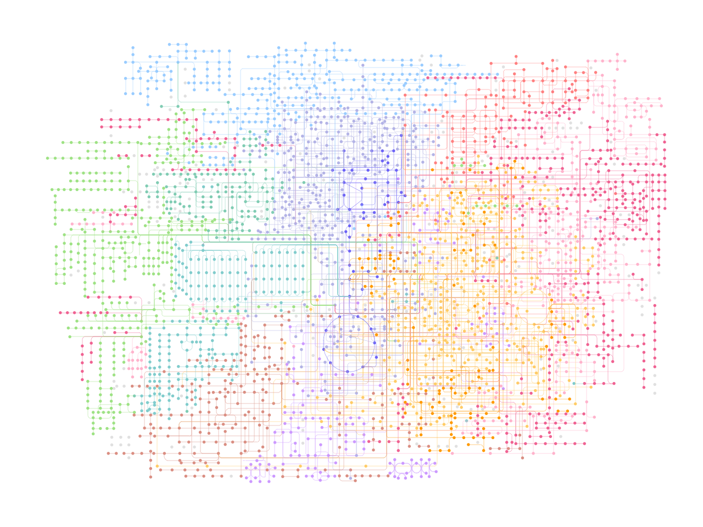

Drawing KEGG global and overview map#
[2]:
import pykegg
import requests_cache
from plotnine import (
ggplot,
geom_point,
aes,
geom_segment,
theme_void,
options
)
import warnings
warnings.filterwarnings('ignore')
## Cache all the downloaded files
requests_cache.install_cache('pykegg_cache')
graph = pykegg.KGML_graph(pid="ko01100")
[3]:
nodes = graph.get_nodes()
coords = graph.get_coords()
[4]:
## Plot without map nodes
(ggplot() +
geom_point(aes(x="x", y="y"), size=0.1,
data=nodes[nodes.original_type!="map"], color=nodes[nodes.original_type!="map"].fgcolor.tolist())+
geom_segment(aes(x="x", y="y", xend="xend", yend="yend"),
color=coords.fgcolor.tolist(), data=coords,
size=0.1)+
theme_void())

[4]:
<Figure Size: (640 x 480)>
Colorize edges based on KO values#
We obtained the data from the metagenomic study of Crohn’s disease patient (He et al. 2017. GigaScience). Specifically, from GigaDB, the abundance of KEGG Orthology is downloaded. The log2 fold change of mean abundance values were obtained between samples with column name starting with CD and CT.
[6]:
import pandas as pd
import numpy as np
ko = pd.read_csv("../KO.profile", sep="\t", index_col=0)
[7]:
cd = [i for i in ko.columns if "CD" in i]
ct = [i for i in ko.columns if "CT" in i]
cd_mean = ko.loc[:,cd].apply(lambda x: x.mean(), axis=1)
ct_mean = ko.loc[:,ct].apply(lambda x: x.mean(), axis=1)
lfc_dict = np.log2(cd_mean / ct_mean).to_dict()
[8]:
discard = [i for i in lfc_dict.keys() if lfc_dict[i] == np.inf] + [i for i in lfc_dict.keys() if lfc_dict[i] == -1*np.inf]
for d in discard:
del lfc_dict[d]
[23]:
coords = pykegg.append_colors_continuous_values(coords, lfc_dict, "name", center_value=0)
[24]:
## Plot without map nodes
(ggplot() +
geom_segment(aes(x="x", y="y", xend="xend", yend="yend"),
color="#707070", data=coords, size=0.1)+
geom_segment(aes(x="x", y="y", xend="xend", yend="yend"),
color=coords[coords.color.apply(lambda x: x is not None)].color.tolist(),
data=coords[coords.color.apply(lambda x: x is not None)],
size=0.5)+
geom_point(aes(x="x", y="y"), size=0.1,
data=nodes[nodes.original_type!="map"], color="#707070")+
theme_void())

[24]:
<Figure Size: (640 x 480)>
[ ]: